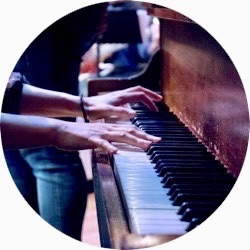

|  |
hyeyoungkimmusicHyeyoung kim Music A MULTI-AWARD WINNING COMPOSER, LIBRETTIST, AND SINGER-SONGWRITER. |
MAC Nominee, 2005 recipient of the Jonathan Larson, Daryl Roth, and TRU Daniel Marshall Multicultural awards. A member of BMI workshop and ASCAP, she was selected for the Nautilus Composer/Librettist lab at New Dramatists, ASCAP Johnny Mercer Songwriting Project and York Theatre's NEO 5 concert series. Originally from Seoul, Korea, Hyeyoung received her MFA from NYU's Graduate Musical Theatre Writing Program; BA in Music Composition from Ewha Womans University.
| 2019 | New Wave Award at Korea Musical Awards |
| 2013 | Top Jury Honor at DIMF (Daegu International Musical Festival in Korea) |
| 2011 | Nominated for Best Song category in MAC award, New York, New York BWW Boston Award for the best musical in mid-size theater |
| 2010 | One of the Winners of DIMF (Daegu International Musical festival) in Korea |
| 2009 | One of the Winners of Chang-jak Factory competition in Korea One of the Winners of CJ Young Festival competition in Korea Nominated for Best Small Musical category in Korean Musical Awards for “Café-in,” in Korea |
| 2005 | Jonathan Larson Performing Arts Award Daryl Roth Award Daniel Marshall Multicultural Award for Non-Traditional Musical Theatre |